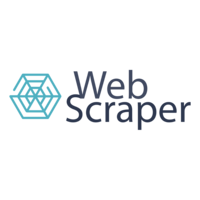
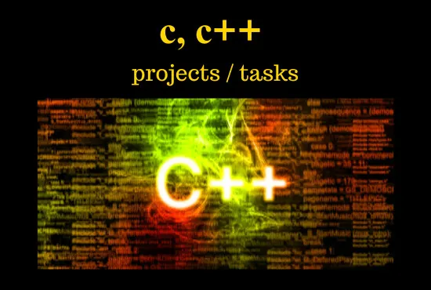
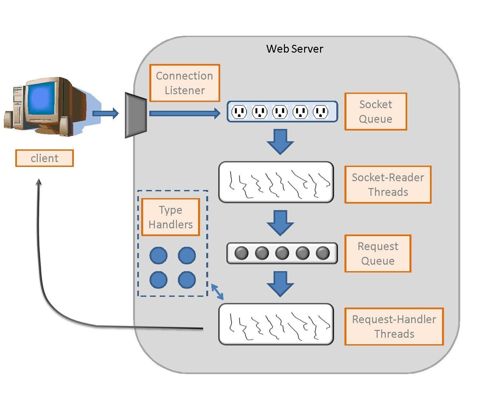
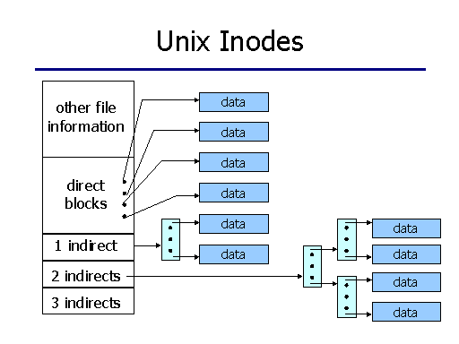
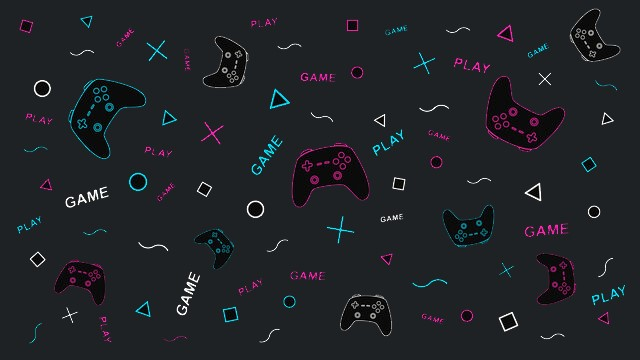
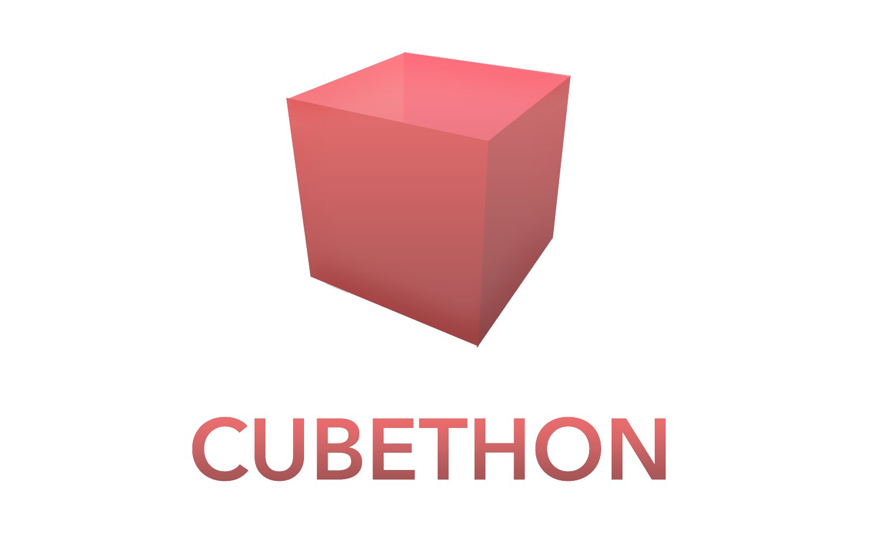
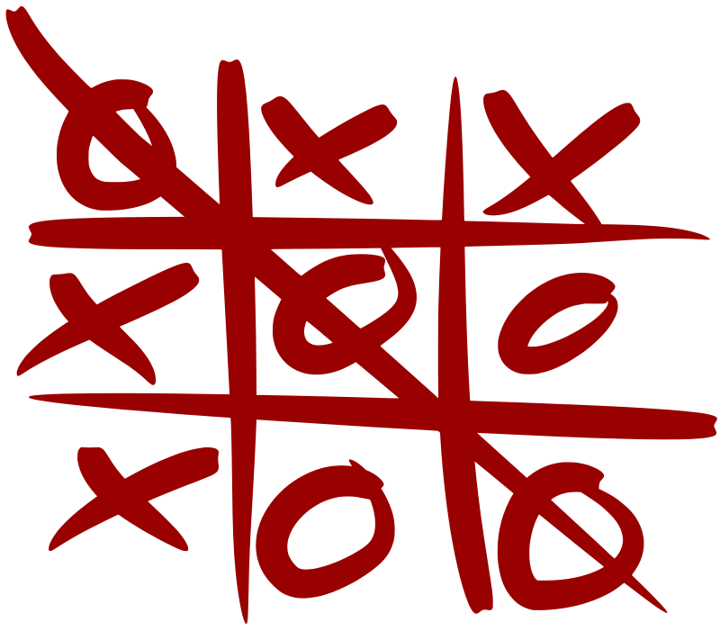
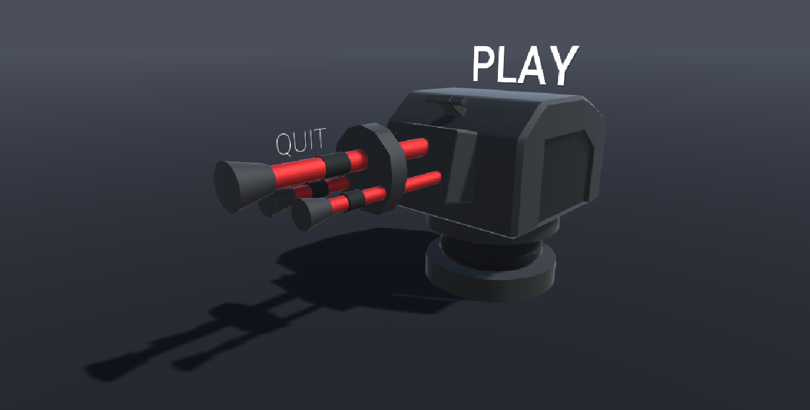

Python

AutoScraper

This project is made for an automatic web scraping to collect data for machine learning and deep learning projects.
This project have 2 versions Streamlit and FastAPI version (Streamlit is the older one), services include but not limited to:
Raw (scraping based on similarities), API downloading, downloading various formats from the website Maya,
scraping the web based on user queries, PDF files parsing, Scrape predefined specific content from the OECD website.
FastAPI version also include management services like: sending an email, handling tables data in Azure Data Lake, handling Airflow DAGs creation and suitable data in Azure Blob Containers.
The project is using Requests, BeautifulSoup, Scrapy and other libraries.
To view the code Click Here
Chatbot & Virtual-Assistant
Here you will find a collection of implementations of virtual assistants implemented in Python.
Chatbots are intelligent enough to sense the context of the conversation and execute the right bot flow. However, chatbots cannot find answers or perform a set of activities on their own.
On the other hand, a virtual assistant can crawl through existing resources and offer assistance for a wide range of requests.
To view the code Click Here
Web Scrapers

A list of few different web scrapers I created (for Amazon, Twitter, IMDb and more)
Each scraper works in a different way, some need input or limits from the person operating the scripts.
Libraries I used for this including but not limited to are BeautifulSoup, Selenium, csv, requests, re and more.
To view the code Click Here
Java
Chess Engine

This is an implantation to the famous Chess game, it's you vs the computer.
This implantation is a graphical chess engine that also uses pruning in order to increase speed and perforamnces
Chess is a recreational and competitive board game played between two players, in this project it will be the user versus the computer.
To view the code Click Here
Android Studio

Java
PasswordKit
It's a mobile application for android using Java, this app is a password manager.
You can store your passwords and usernames, generate new passwords and back it all up to your google drive account.
It encrypts your data using my own algrithm and on the result of my algorithm it uses Sha-1 and/or Sha-256, everything is then stored on your smartphone locally using SharedPreferences and Sqlite database
To view the code Click Here not yet
To view on GooglePlay Click Here
Stickr
This is a sticker application in Java for whatsapp, sticker designer is Kiril G.
It comes with only stickers in the hebrew language for now, it contain some ads and it allows you to add those stickers to your whatsapp freely, only for the featured pack you need to watch a short ad.
It's connected to Firebase and gets from it the statistics (release date, likes, downloads) as well as which pack is the featured one and also the most updated app version which allow the user to know when there is an update and whether the update is a must or not base on a FireBase fields.
To view the code Click Here not yet
To view on GooglePlay Click Here
Musician Finder
This app will help musicians find other musicians or bands to play music with.
Users can chat with other people, upload posts and connect with other people in their area.
We did extensive use with FireBase (authentication, real-time database).
It was created with friends, as a team.
To view the code Click Here
Flutter
Yana
YANA is a social initiative intended to fight against loneliness amongst young adults
This project is meant to help people create new social circles within safe spaces.
I built the App with my friends, to learn more about the app go to our Wiki.
To view our Wiki Click Here
To view the code Click Here
AllCalculator
This is a calculator with 3 options,
You can calculate anything you want using the limited scientific calculator, you can also calculate a tip and bill using the tip calculator option, and the third option is a currency converted which is limited to our donators only, you can donate 3/5/10 NIS any time you want and get the currency converter permanently.
To view the code Click Here
To view on GooglePlay Click Here
C & CPP

Generic Hash Table

HashTables are data structures that support these three operations:
1. Adding an element
2. Removing an element
3. Searching for an element .
The HashTable implemented by using an
array that at each index of the array, there is a pointer to a linked list.
The HashTable is support int and strings.
To view the code Click Here
HTTP Client
An HTTP client that constructs an HTTP request based on user’s command line input, sends the request
to a Web server, receives the reply from the server, and displays the reply message on screen.
(support only IPv4 connections).
For Example:
./client -p some-text -r 2 tel=02-6655443 age=23 http://www.ptsv2.com/t/ex2
The Request would be:
POST /t/ex2?tel=02-6655443&age=23 HTTP/1.0
Host: www.ptsv2.com
Content-length:6
some-text
To view the code Click Here
HTTP Server & Thread-pool

HTTP server that:
- Constructs an HTTP response based on client's request.
- Sends the response to the client.
The server creates the pool of threads in advanced and each time it needs a thread to
handle a client connection, it take one from the pool or enqueue the request if there is no
available thread in the pool.
There is always one socket where the server listens to connections and for each client connection request,
the server opens another socket. and let a thread handle it.
To view the code Click Here
Operating System

Disk Memory Management

Its a simulation of disk memory Management , how the disk create files open them
reads form them, delete and write.
for each file we have inode (a structure) that points to blocks on disk and
there will be the file data.
To view the code Click Here
Web Development

L-ES Portfolio (Old Version)

This one page website is an online portfolio of Lidor E.S (Me), it's implemented using HTML, CSS and JavaScript (with and without JQuery).
You can find my skills and projects, you can also read about me in order to get to know me better, read and look at all the online courses I completed.
And at the bottom there are many ways for you to get in touch me with.
To view the code Click Here not yet
Games - mixed languages
Java, Python, JavaScript, C#, CPP

Snake Games
This is a collection of the famous Snake game, it comes in Java, Python and JavaScript.
Snake is a video game that originated during the late 1970s in arcades becoming something of a classic.
The player controls a long, thin creature, resembling a snake, which roams around on a bordered plane, picking up food, trying to avoid hitting its own tail or the edges of the playing area.
To view the code Click Here
CUBETHON

This is a simple game in C# of a red block that trying to avoid collision with other obstacles.
The game is devided into level, each level contains more and more obstacles, the player speed is increasing, different surface frictions and more.
This game is suitable for Desktop and Mobile.
To view the code Click Here
FallingBlocks
This is a Falling Blocks implementation in Unity using C#.
Falling Blocks is a game where you ( the player ) need to move from side to side in order to avoid collision with the blocks that are falling from the top of the screen ( and top of the sides ), the blocks are coming in random direstions, shapes and sizes and the more you progress in the game the faster the blocks will fall.
To view the code Click Here
TicTacToes Collection

This is the famous game Tic Tac Toe / noughts and crosses. There are Xs and Os, the players take turns marking the spaces in a 3×3 grid. The first player who succeeds in placing three of their marks in a horizontal, vertical, or diagonal row is the winner. You can play against the computer or against your friend. The computer looks for the quickest way to win in the least moves.
The game available in Java, JavaScript, CPP, C#, Python.
To view the code Click Here
Tower Defense

This is a Tower Defense implementation in Unity using C#.
Tower defense (TD) is a subgenre of strategy video game where the goal is to defend a player's territories or possessions by obstructing the enemy attackers or by stopping enemies from reaching the exits, usually achieved by placing defensive structures on or along their path of attack.
To view the code Click Here